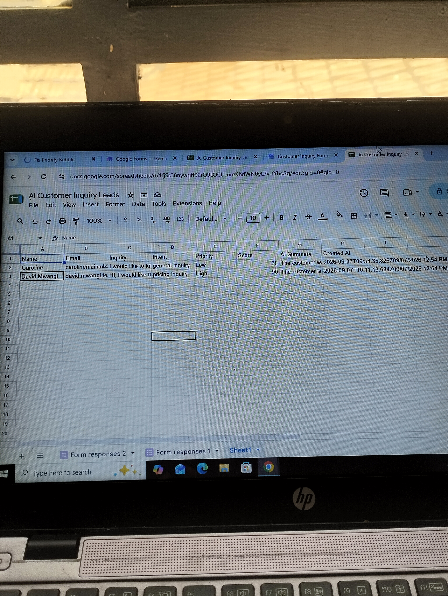

AI Customer Inquiry & Lead Prioritization Automation
An AI-powered workflow automation that captures customer inquiries, analyzes and classifies leads, assigns priority scores, generates AI summaries, and automatically stores structured lead information in Google Sheets.
The Challenge
Businesses can receive many customer inquiries through forms, websites, and other channels. Manually reviewing each inquiry, determining its category, deciding its priority, and recording the information can become repetitive and time-consuming.
The goal of this project was to automate that process so that incoming inquiries could be analyzed and organized automatically.
The Solution
I designed an automated AI workflow that connects Google Forms, Make, Gemini AI, and Google Sheets.
When a customer submits an inquiry, the workflow automatically sends the information for AI analysis, classifies the inquiry, determines its priority, generates a lead score and summary, and records the structured result in Google Sheets.
How the Automation Works
Workflow Demonstration
Automated Google Sheets Output
After the automation runs, the processed customer inquiry is automatically recorded in Google Sheets with structured lead information, including the inquiry category, priority, lead score, AI summary, and submission time.

AI Processing
Gemini AI is used to interpret the customer's inquiry and transform unstructured text into structured information.
The workflow identifies the inquiry category, determines priority, generates a lead score, and produces an AI-generated summary that can be used for faster follow-up.
Lead Information Generated
Customer identification information.
Contact information for follow-up.
The original customer request.
AI-generated classification of the inquiry.
AI-generated priority classification.
A numerical indication of lead priority.
A concise summary generated from the inquiry.
The time the inquiry was submitted.
Business Value
This automation reduces repetitive manual data entry and creates a consistent process for handling incoming inquiries.
By automatically prioritizing leads and organizing customer information, businesses can identify high-priority prospects faster and improve follow-up efficiency.
Technologies
Result
The completed workflow automatically transforms a customer inquiry into a structured, prioritized lead record without requiring the information to be manually processed at every stage.
This demonstrates how AI and workflow automation can be combined to streamline repetitive business processes and support faster lead management.